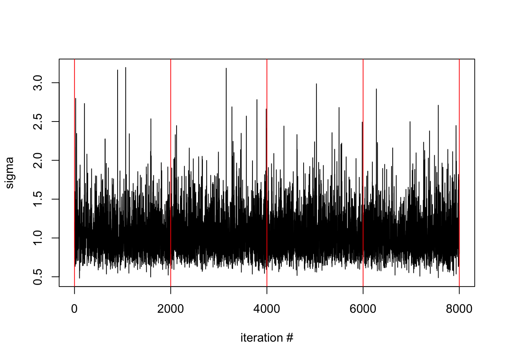

Chapter 3 The model specification
Models are specified as a C++ class/struct that should have the following
signature
struct model{
// data statements
void preProcess(){
// preprocess (called only once) here
}
template < class varType, class tensorType, bool storeNames>
void operator()(amt::amtModel<varType,tensorType,storeNames> &model__){
// specifcation of model target density ++ here
}
}; // end of structThe name of the class/struct is arbitrary
3.1 A simple worked example
Now consider specifying the model \(y_i \sim\) iid \(N(\mu,\exp(\lambda)),\;i=1,\dots,n\) (with flat priors on \(\mu,\lambda\)) for a given data set \(\mathbf y\). We wish to sample from the posterior distribution of \((\mu,\lambda)\), and in addition, get samples from the posterior distribution of \(\sigma=\exp(0.5\lambda)\).
The model class would look something like
using namespace amt;
struct model{
DATA_VECTOR(y); // data to be passed from R
void preProcess(){} // not used in this example
template < class varType, class tensorType, bool storeNames>
void operator()(amt::amtModel<varType,tensorType,storeNames> &model__){
PARAMETER_SCALAR(mu); // parameter (sampled quantity)
PARAMETER_SCALAR(lambda); // parameter (sampled quantity)
// note; all variables depending on the parameters must be of type varType
varType sigma = exp(0.5*lambda);
// add data likelihood to the model object
model__+=normal_ld(y,mu,sigma);
// add sigma as a quantity to produce samples of
model__.generated(sigma,"sigma");
}
}; // end of structWhen stored in file basic_model.cpp, the above model specification may be compiled using
model <- pdmphmc::build("basic_model.cpp")## model name : model## process type : HMCProcess## metric tensor type : metricTensorDummy## compilation exited successfullyThen let’s simulate some data and run the model:
set.seed(123)
y <- rnorm(10) # y is iid N(0,1) with n=10
fit <- pdmphmc::run(model,data=list(y=y))Finally, get a summary of the sampled- and generated quantities, based on rstan::monitor:
fit## run output for model: model## # of chains : 4## Summary based on discrete samples:## mean se_mean sd n_eff Rhat
## mu 0.076 0.006 0.342 2920 1.000
## lambda 0.028 0.010 0.514 2757 1.001
## sigma 1.049 0.006 0.291 2760 1.001## summary based on integrated samples:## estimate se_estimate n_eff Rhat
## V1 1.048 0.004 1773 1.001## NOTE: integrated samples do NOT reflect the complete target distibution, only indicated moments with respect to the target distributionFurther functions exist for inspecting the output, e.g. trace plots
pdmphmc::trace.plot(fit,"sigma")
In the next chapter, a more detailed summary of the possibilities of the model specification is given.